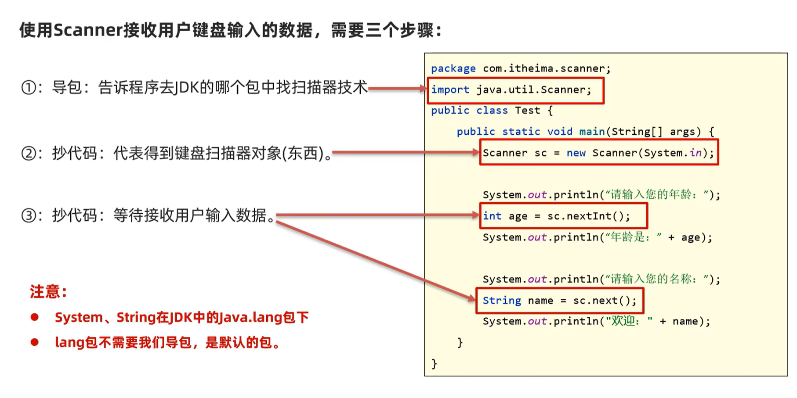
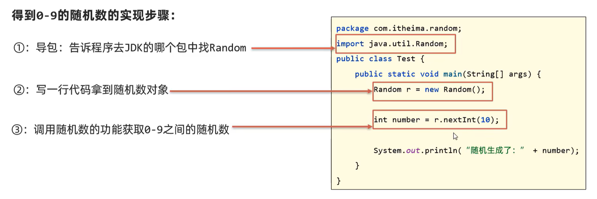
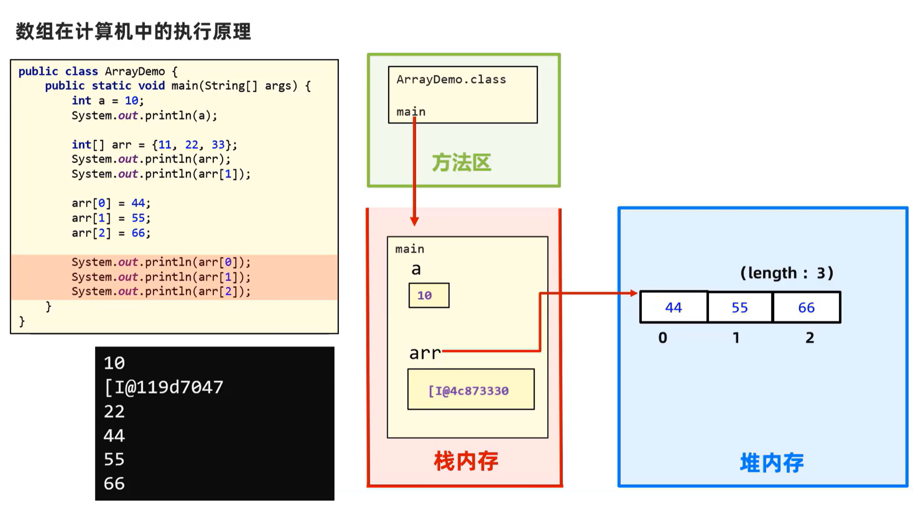
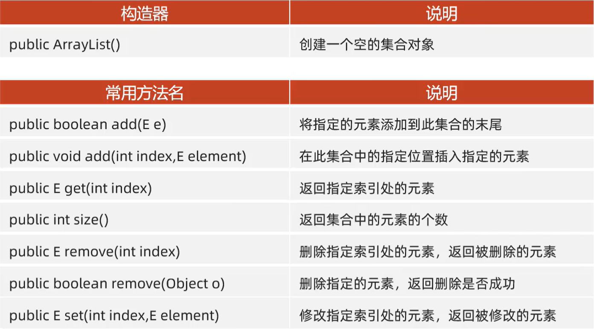

Java
面向对象的三大特征：封装、继承、多态
- JVM（Java Virtual Machine）：Java虚拟机，真正运行Java程序的地方
- 核心类库：Java自己写好的程序，给程序员自己的程序调用的
- JRE（Java Runtime Environment）：Java的运行环境
- JDK（Java Development Kit）：Java开发工具包
变量详解
字面量
| 常用数据 | 生活写法 | 程序中写法 | 说明 |
|---|---|---|---|
| 整数 | 336，-143 | 336，-143 | 写法一致 |
| 小数 | 13.14，-5.21 | 13.14，-5.21 | 写法一致 |
| 字符 | A,0,我 | ‘A’,‘0’,‘我’ | 必须使用单引号，有且只有一个字符 |
| 字符串 | 张三 | “hello”,“张三” | 必须使用双引号，内容可有可无 |
| 布尔值 | 真、假 | true、false | |
| 空值 | null | 特殊的值，空值 |
二进制(BIN)以0B开头
八进制(OCT)以0开头
十进制(DEC)
十六进制(HEX)以0x开头
数据类型
- 整型：byte、short、int、long
byte：-128~127
如果希望随便写一个整型字面量默认是long类型需在后面加上L/l
- 浮点型：float、double
如果希望随便写一个小数字面量默认是float类型需在后面加上F/f
-
字符型：char
-
布尔型：boolean
-
引用数据类型：String
定义的变量可用于记住一个字符串数据
类型转换
自动类型转换
类型小的变量可直接赋值给类型范围大的变量
表达式的自动类型转换
byte、short、char→int→long→float→double
表达式的最终结果类型由表达式中的最高类型决定
表达式中，byte、short、char直接转换成int类型参与运算
强制类型转换
数据类型 变量2 =（数据类型）变量1、数据
浮点类型强转成整型，直接丢掉小数部分，保留整数部分返回
运算符
+符号做连接符
能算则算，不能算就在一起
自增自减运算符
++a：先加再用
a++：先用再加
赋值运算符
自带强制类型转换
逻辑运算符
^：逻辑异或 eg.2>1^3>1
前后条件结果相同就直接返回false，不同才返回true
相同为假，不同为真
&&：左边为false，右边则不执行
||：左边为true，右边则不执行
两者与&、|区别：后者无论左边是false还是true，右边都要执行
运算符的优先级
| 优先级 | 运算符 |
|---|---|
| 1 | () |
| 2 | !、-、++、– |
| 3 | *、/、% |
| 4 | +、- |
| 5 | <<、>>、>>> |
| 6 | <、<=、>、>=、instanceof |
| 7 | ==、！= |
| 8 | & |
| 9 | ^ |
| 10 | | |
| 11 | && |
| 12 | || |
| 13 | ?: |
| 14 | =、+=、-=、*=、/=、%=、&= |
Demo1：接收用户键盘输入的数据

分支结构（if、switch）
- switch使用时注意事项
- 表达式类型只能是byte、short、int、char，JDK5开始支持枚举，JDK7开始支持string，不支持double、float、long
- case给出的值不允许重复，且只能是字面量，不能是变量
循环结构（for、while、do-while
Demo2：随机数random类

数组
- 静态初始化数组
数据类型[ ] 数组名=new 数据类型[]{元素1，元素2，…};
获取数组长度：数组名.length
- 动态初始化数组
数据类型[] 数组名=new 数据类型[长度]
数组在计算机中的执行原理
Java内存分配：
- 方法区
编译后的字节码文件先加载到这里
- 栈
方法运行时所进入的内存，变量也是在这里
方法被调用的时候，是进入到栈内存中运行
特点：先进后出
- 堆
new出来的东西会在这块内存中开辟空间并产生地址
- 本地方法栈
- 寄存器
图解

多个变量指向同一个数组
- 多个数组变量中存储的是同一个数组对象的地址
- 多个变量修改的都是同一个数组对象中的数据
- 如果某个数组变脸中存储的null代表这个数组变量没有指向对象，需要注意可以输出这个变量，但不能用这个数组变量去访问数据或者访问数组长度
会报空指针异常：NullPointerException
Java的参数传递机制
都是值传递
基本类型的参数传输存储的数据值
引用类型的参数传输存储的地址值
方法重载
一个类中出现多个方法的名字相同，但是它们的形参列表是不同的，其它的都不管（如修饰符、返回值类型是否一样都无所谓）
形参列表不同指：形参的个数、类型、顺序不同，不关心形参的名称
在方法中单独使用return
在无返回值的方法中使用
作用：立即跳出并结束当前方法的执行
面向对象编程
-
一个代码文件中可以写多个class类，但只能用一个public修饰，且public修饰的类名必须成为代码文件名
-
Java存在自动垃圾回收机制，会自动清除掉垃圾对象
this
就是一个变量，可用在方法中，拿到当前对象
相当于c++里的this，Python中的self
主要用来解决对象的成员变量与方法内部变量的名称一样时导致的访问冲突问题
public class Student{ |
构造器
创建对象时同时完成对对象成员变量（属性）的初始化赋值
类似C++的重构
public class Student{ |
- 类在设计时若不写构造器，Java会为类自动生成一个无参构造器
- 一旦定义有参构造器，Java不会自动为类生成无参构造器，此时建议自己手写一个无参构造器
封装
面向对象的三大特征：封装、继承、多态
合理暴露、合理隐藏
public class Student{ |
实体类JavaBean
- 一种特殊形式的类
- 类中的成员变量都要私有，并且要对外提供相应的get、set方法
- 类中必须有一个公共的无参的构造器
实体类只负责数据存取，而对数据的处理交给其他类来完成，以实现数据和数据业务处理相分离
常用API
包
- 同一个包下的类，互相可以直接调用
- 调用其他包的程序，要先导包才可访问
- 格式：import 包名.类名;
- 调用Java的程序需先导包才可访问，但Java.lang包下的程序是不需要我们导包的，可直接使用
- 调用多个不同包下的程序，而程序名正好一样，此时默认只能导入一个程序，另一个程序必须带包名访问
String

两种创建对象的方式
String name="test" |
String s = "test"; |
注意事项
-
String对象的内容不可改变，被称为不可变字符串对象
-
只要是以"…"方式写出的字符串对象，会存储到字符串常量池，且相同内容的字符串只存储一份
但通过new方式创建字符串对象，每new一次都会产生一个新的对象放在堆内存中
String s2=new String("abc"); |
A1：第一行创建了两个。双引号中的abc会储存在常量池中，即常量池产生一个对象；new的时候又要产生一个字符串对象（放在堆中）。
第二行创建了零个。常量池中已经有了abc，则s1直接指向abc。
String s1="abc"; |
A2：false。s1指向常量区，而s3是运算，会放在堆中。
String s1="abc"; |
A3：true。Java存在编译优化机制，程序在编译时"a"+“b”+"c"会直接转成"abc"以提高程序执行性能。
ArrayList
集合是一种容器，用来装数据，类似于数组，大小可变
集合都支持泛型:“ArrayList<E>”，约束集合在编译阶段只能操作某种数据类型（包括对象）
集合和泛型都不支持基本数据类型，只能支持引用数据类型

static

修饰成员变量
成员变量按照有无static修饰，分为两种：
- 类变量：有static修饰，属于类，在计算机里只有一份，会被类的全部对象共享
- 实例变量（对象变量）：无static修饰，属于每个对象
public class Student{ |
类名.类变量（推荐） |
修饰成员方法
- 类方法：有static修饰的成员方法，属于类
- 实例方法：无static修饰的成员方法，属于对象
为什么工具类中方法要用类方法而不用实例方法？
- 实例方法需要创建对象来调用，此时对象只是为了调用方法，对象占内存，会浪费内存
- 类方法直接用类名调用即可，调用方便，也能节省内存
工具类无创建对象的需求，建议将工具类的构造器进行私有
public class Mytools{ |
注意事项
public class Mytools{ |
代码块
类的五大成分（成员变量、构造器、方法、代码块、内部类）
- 静态代码块
格式：static{}
特点：类加载时自动执行，由于类只会加载一次，所以静态代码块也只执行一次
作用：完成类的初始化，例如：对类变量的初始化赋值
- 实例代码块
格式：{}
特点：每次创建对象时，执行实例代码块，并在构造器前执行。
作用：和构造器一样，都是用来完成对象的初始化的，例如：对实例变量进行初始化赋值
public class Student{ |
应用：比如创建对象的日志（不放到构造器而是代码块中执行，减少重复代码编写）
System.out.println("有人创建了对象："+this); |
单例设计模式
设计模式：具体问题的最优解法
- 解决什么问题？
- 怎么写？
确保一个类只有一个对象
饿汉式单例对象
写法
- 把类的构造器私有
- 定义一个类变量记住类的一个对象
- 定义一个类方法，返回对象
public class A{ |
懒汉式单例对象
写法
- 把类的构造器私有
- 定义一个类变量用于存储对象
- 提供一个类方法，保证返回的是同一个对象
public class B{ |
如果单例对象频繁用到——饿汉式
很少去用它——懒汉式（节省内存）
继承
关键字——extends
public class B extend A{} |
特点：子类可继承父类的非私有成员（成员变量、成员方法）
继承后对象的创建：子类的对象是由子类、父类共同完成的
权限修饰符
限制类中的成员（成员变量、成员方法、构造器、代码块…）能够访问的范围
| 修饰符 | 在本类中 | 同一个包下的其他类 | 任意包下的子类 | 任意包下的任意类 |
|---|---|---|---|---|
| private | √ | |||
| 缺省 | √ | √ | ||
| protected | √ | √ | √ | |
| public | √ | √ | √ | √ |
private<缺省<protected<public
单继承、Object
Java中的类不支持多继承，但是支持多层继承
Object类是Java所有类的祖宗类
方法重写
声明不变，重新实现
子类觉得父类中某个方法不好用，或无法满足自己的需求时，子类可以重写一个方法名称、参数列表一样的方法，去覆盖父类的这个方法
重写后，Java遵循就近原则进行方法的访问
参数列表相同叫重写，不同叫重载
注意：
-
重写小技巧：使用Override注解，它可以指定Java编译器，检查我们方法重写的格式是否正确，代码可读性会更好
-
子类重写父类方法时，访问权限必须大于或者等于父类该方法的权限==（public>protected>缺省）==
-
重写的方法返回值类型必须与被重写方法的返回值类型一样，或者范围更小
-
私有方法、静态方法不能被重写
常见应用场景
- 子类重写Object类的toString()方法，以便返回对象的内容
public String toString(){ |
直接Generate亦可生成
子类中访问其他成员的特点
依照就近原则
局部变量与成员变量冲突时，可在前加this
public class F{ |
public class Z extends F{ |
子类构造器的特点
子类的全部构造器，都会先调用父类的构造器，再执行自己
在子类的全部构造器的第一行，都会有super();
写不写都默认存在，它是调用父类的无参构造器的
若父类只有有参构造器，则我们必须在子类构造器第一行手写super(…)，指定去调用父类的有参构造器↓
class F{ |
class Z extends F{ |
this(…)调用兄弟构造器
任意类的构造器中，都可以通过this(…)去调用该类的其他构造器
public class Test3{ |
多态
在继承/实现情况下的一种现象，表现为：对象多态、行为多态
前提：有继承/实现关系；存在父类引用子类对象；存在方法重写
多态是对象、行为的多态，Java中的属性（成员变量）不谈多态
好处
- 在多态形式下，右边对象时解耦合的，更便于拓展和维护
解耦合：比如系统中的每一个模块拆分成一个个的服务
- 定义方法时使用父类类型的形参，可以接收一切子类对象，拓展性更强、更便利
问题
- 多态下不能使用子类的独有功能
多态下的类型转换问题
-
自动类型转换：父类 变量名=new 子类();
People p =new Teacher();
-
强制类型转换：子类 变量名=(子类)父类变量
Teacher t=(Teacher)p;
注意事项
-
存在继承/实现关系就可以在编译阶段进行强制类型转换，编译阶段不会报错
-
运行时如果发现对象的真实类型与强转后的类型不同。就会报类型转换异常（ClassCastException）的错误
People p=new Teacher();
Student s=(Student) p;//ClassCastException
强转前，Java建议：使用instanceof关键字，判断当前对象的真实类型，再进行强转
if(p instanceof Student){ |
final
意思是最终，可以修饰（类、方法、变量）
-
修饰类：该类被称为最终类，特点是不能被继承了
-
修饰方法：该方法被称为最终方法，特点是不能被重写了
-
修饰变量：该变量只能被赋值一次
final class A{}//类 |
final修饰变量的注意
-
final修饰基本类型的变量，变量存储的数据不能被改变
-
final修饰引用类型的变量，变量存储的地址不能被改变，但地址所指向对象的内容是可以被改变的
final int[] arr={1,2,3}
arr=null;//错，变量地址不能动
arr[1]=222;//可
常量
使用了static final修饰的成员变量
作用：通用用于记录系统的配置信息
名称全部大写，多个单词下划线连接
public static final String SCHOOL_NAME="NUC"; |
好处
- 代码可读性更好，可维护性也更好
- 程序编译后，常量会被“宏替换”：出现常量的地方全部会被替换成其记住的字面量，可保证使用常量和直接用字面量的性能是一样的
抽象类
关键字：abstract，可用它修饰类、成员方法
抽象方法只有方法签名，不能有方法体
注意事项&特点
- 抽象类中不一定有抽象方法，有抽象方法的类一定是抽象类
- 类该有的成员（成员变量、方法、构造器）抽象类都可以有
- ==最主要的特点：==抽象类不能创建对象，仅作为一种特殊的父类，让子类继承并实现
- 一个类继承抽象类，必须重写完抽象类的全部抽象方法，否则这个类也必须定义成抽象类
好处
父类知道每个子类都要做某个行为，但每个子类要做的情况不一样，父类就定义成抽象方法，交给子类去重写实现，更好的支持多态
常见应用场景：模板方法设计模式
解决方法中存在重复代码的问题
写法
-
定义一个抽象类
-
在里面定义两个方法
- 一个是模板方法：把相同代码放里面
- 一个是抽象方法：具体实现交给子类完成
建议用final关键字修饰模板方法
- 模板方法是给对象直接使用的，不能被子类重写
- 一旦子类重写了模板方法，模板方法就失效了
接口
关键字：interface
public interface 接口名{ |
接口中不能有构造器、代码块，不能创建对象
接口是用来被类实现（implements）的，实现接口的类成为实现类
修饰符 class 实现类 implements 接口1,接口2...{} |
一个类可以实现多个接口（接口可以理解为干爹），实现类实现多个接口，必须重写完全部接口的全部抽象方法，否则实现类需要定义成抽象类
好处
- 弥补类单继承的不足，一个类同时可以实现多个接口
- 让程序可以面向接口编程，可以灵活方便切换各种业务实现
jdk8开始新增的方法
-
默认方法：必须使用default修饰，默认会被public修饰
（也就是实例方法：对象的方法，必须使用实现类的对象来访问
public interface A{
default void test1(){
System.out.println("==默认方法==");
}
}
---
psvm)
B b=newB();
b.test1(); -
私有方法：必须使用private修饰（JDK9开始
因为是私有方法，所以只能在接口内访问（比如在默认方法中访问、或者接口中的其他私有方法）
public interface A{
private void test1(){
System.out.println("==私有方法==");
}
} -
静态方法：必须使用static修饰
public interface A{
static void test3(){
System.out.println("==静态方法==");
}
}
A.test3();
杂项
IDEA管理Java程序的结构
- project（项目、工程）
- module（模块）
- package（包）
- class（类）
- 创建工程（空工程）
- 创建模块
- 创建包 src-新建包（域名倒写+名字）
- 创建类 包-新建类（类名首字母大写）
快捷键
-
main/psvm、sout
-
Ctrl+D：复制当前行数据到下一行
-
Ctrl+Y：快速删除所在行
-
Ctrl+Alt+L：格式化代码
-
Alt+shift+↑/↓：上下移动当前代码
-
Ctrl+/，Ctrl+shift+/：代码注释
/** */：文档注释
- Alt+Enter
选中代码，然后Ctrl+Alt+T，快速以…包裹

- 数组名.fori然后回车快速遍历数组
- 右键-Generate-
- "Getter and Setter"快速生成get、set方法（shift再点击变量可多选）
- "Constructor"自动生成构造器
String、StringBuffer与StringBuilder三者之间的区别？
String、StringBuffer和StringBuilder是Java中用于处理字符串的类，它们之间有一些重要的区别。
- 不可变性：
- String类是不可变的，一旦创建，它的值就不能被修改。每次对String进行操作（如拼接、替换等），都会创建一个新的String对象。这意味着在频繁操作字符串时，会引发大量的对象创建和销毁，影响性能。
- StringBuffer和StringBuilder是可变的，它们允许修改已有的字符串而不创建新的对象。在字符串频繁修改的场景中，它们的性能更好。
- 线程安全性：
- String是线程安全的，因为它的不可变性保证了多线程环境下的安全性。
- StringBuffer是线程安全的，它的方法都使用了synchronized关键字进行同步。这使得它可以被多个线程安全地使用，但在高并发环境下性能相对较低。
- StringBuilder是非线程安全的，它的方法没有进行同步操作。在单线程环境下，StringBuilder的性能比StringBuffer更好。
- 性能：
- 由于String的不可变性，每次对String进行操作都会产生新的String对象，导致额外的内存开销。在频繁操作字符串的情况下，性能较差。
- StringBuffer和StringBuilder都是可变的，它们在进行字符串操作时不会创建新的对象，因此在频繁操作字符串时性能更好。
- StringBuilder相对于StringBuffer的性能更好，因为它不需要进行同步操作。
综上所述，如果你需要一个可变的字符串，并且在单线程环境下进行操作，建议使用StringBuilder，因为它的性能最好。如果在多线程环境下进行操作，或者需要线程安全性，可以使用StringBuffer。只有在操作字符串不频繁的情况下，才建议使用String。
成员变量和局部变量的区别？
Field：成员变量
| 区别 | 成员变量 | 局部变量 |
|---|---|---|
| 类中位置 | 类中，方法外 | 常见于方法中 |
| 初始化值 | 有默认值，无需初始化赋值 | 无默认值，使用前必须赋值 |
| 内存位置 | 堆内存 | 栈内存 |
| 作用域 | 整个对象 | 所属的大括号中 |
| 生命周期 | 与对象共存亡 | 随方法的调用而生，随方法的运行结束而亡 |
动态数组中的对象值是初始化的
搞懂main方法
public class Test{ |
main方法是类方法
运行时Test.main(…)